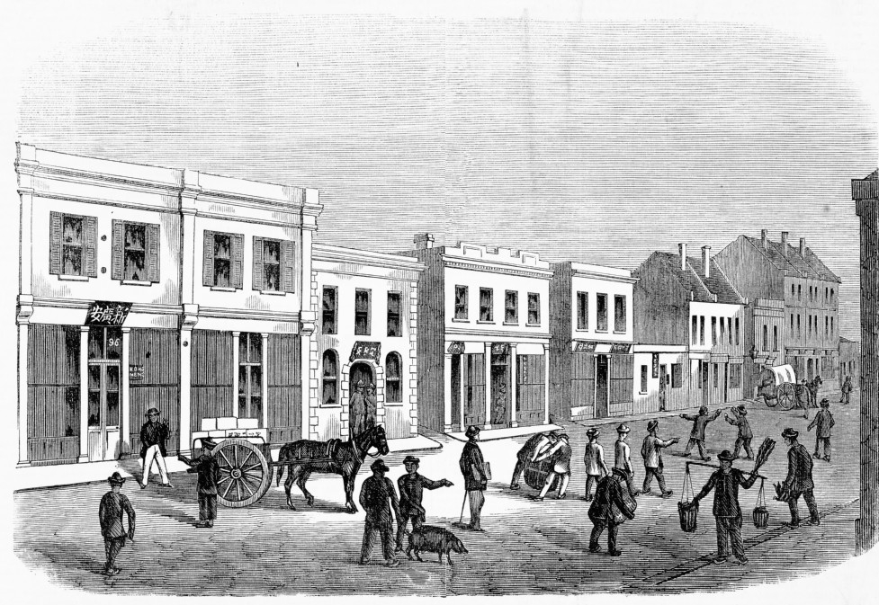
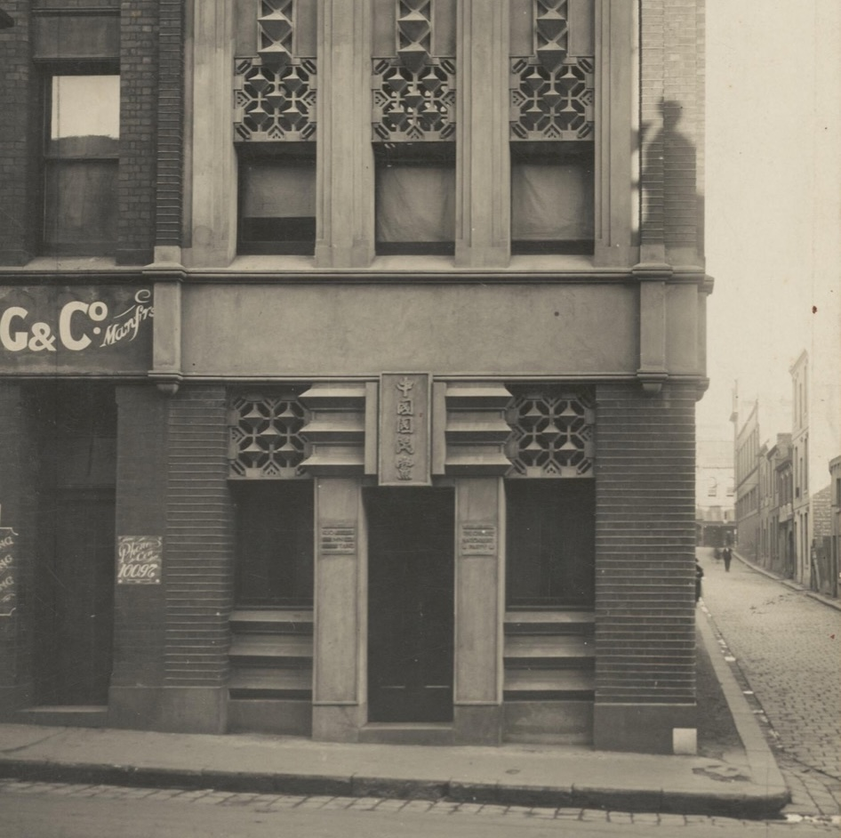
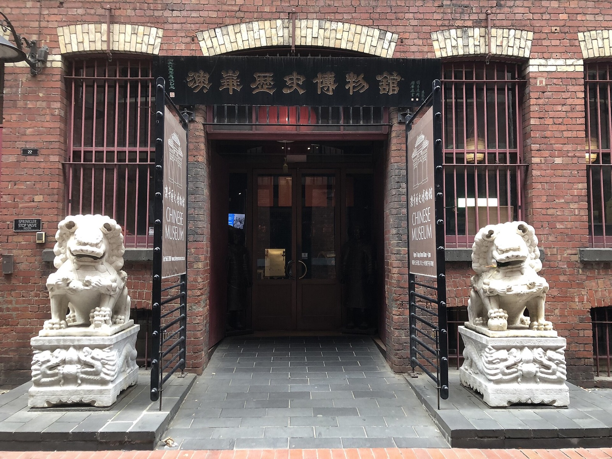

A presence before gold
Chinese merchants were already in Melbourne, while Chinese workers were employed in domestic and farm labour. The gold rush dramatically expanded a story that had already begun.
Explore the places where Chinese Victorians mined, worked, worshipped, formed families and built enduring communities—from the gold rush to the present day.
Chinese Victorian history is not one story of arrival. It is a history of work, family, worship, resistance, enterprise and belonging—first carried through goldfield camps and city lanes, then sustained through exclusion, and renewed by later generations of migration. These histories unfolded on Aboriginal Country, within a gold rush that transformed and damaged land, waterways and First Peoples’ lives.




Chinese merchants were already in Melbourne, while Chinese workers were employed in domestic and farm labour. The gold rush dramatically expanded a story that had already begun.
Large numbers arrived from Guangdong for the goldfields. Victoria imposed a £10 landing tax in 1855; anti-Chinese violence culminated at Buckland in 1857. Chinese Victorians petitioned, challenged laws and organised sustained tax resistance.
Temples, societies, churches, cemeteries and Melbourne’s Little Bourke Street precinct anchored community life. Mining was only one livelihood: people also gardened, traded, milled timber, made furniture, practised herbal medicine and ran cafés.
The Immigration Restriction Act sharply constrained new settlement and family reunion. Yet families, district associations, missions, political groups, newspapers, shops and restaurants kept Chinese Victorian life visible and connected.
After racially discriminatory migration policy ended, new arrivals came through family, refuge, education and skilled migration from many parts of Asia. Museums, festivals, scholarship and heritage protection brought older stories into public view.
Search every research field, filter by region or evidence, or move chronologically through the findings. Map points are orientation aids—not statutory boundaries or permission to enter.
All findings and their complete research details remain available in the list. Check that the local Leaflet files are beside this HTML file, then reload the page.
Choose an era, or use the arrows in the explorer to move through every finding from earliest to latest.
Documentary photographs: Guildford Chinese encampment, Chinese gardener, Chinese Nationalist Club, and Chinese Museum. Image details and licences are available on each source page.
Cemeteries, burners, mine workings, buildings and archaeological remains make nineteenth-century Chinese lives visible in the landscape today.
Temples, market gardens, mills, shops, cafés, missions and associations show work, worship, family and organised community life across Victoria.
Museums, memorials and restored places show later generations preserving and interpreting a history that was never simply confined to the gold rush.
A point may be a visitor entrance, address, precinct centroid or deliberately generalised sensitive location—not a statutory boundary.